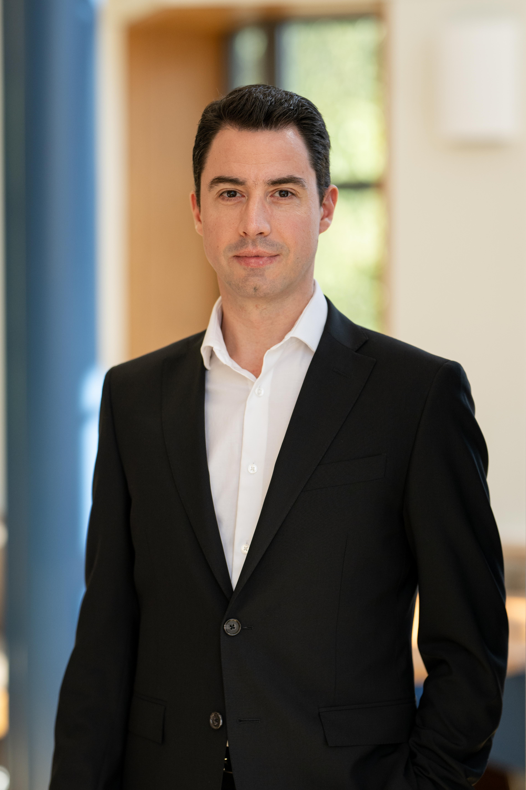

Alessio Albarello

I am an Assistant Professor at the Lee Kuan Yew School of Public Policy at the National University of Singapore. I study comparative political representation and behavior.
I was a Post-Doctoral Research Associate in the Bobst Center for Peace and Justice at Princeton University, and I received my Ph.D. in Political Science at the University of Rochester. Prior to graduate school, I was an elected public representative and party leader in District #8 in the Municipality of Trento, Italy. I also served on the Social Policy Committee and the Environmental and Urban Planning Committee in the same district, with a total of 15 years of experience. I also worked as a manager for a local government agency in the social housing sector.
I received a B.A. and M.A. in Engineering, and an M.A. in European and International Studies (Summa cum laude) from the University of Trento.